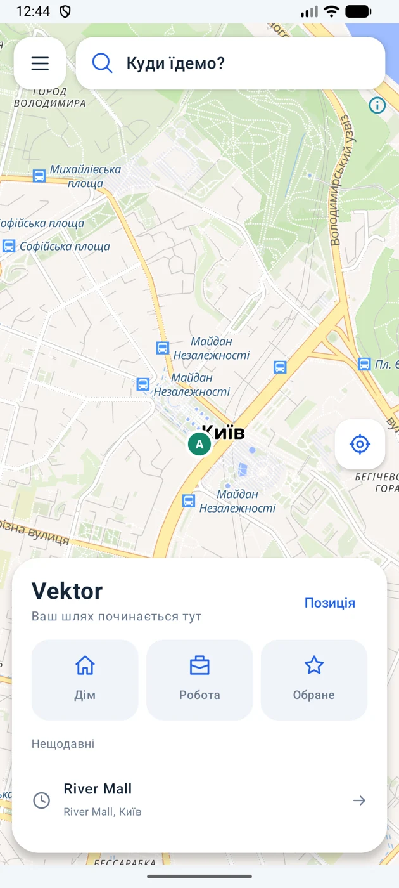

Маршрут, який веде далі
Повороти, відстань і вулиця — на одному екрані. З’їхав з маршруту? Vektor запросить новий, коли позиція достатньо точна.
Авто та пішкиВідкрито для перших поїздок
Менше зайвого на екрані. Більше уваги дорозі. Vektor допомагає знайти місце, прокласти маршрут і бачити наступний поворот.
1.0 · тестова версія · Android 8.0+
Вперше встановлюєш APK?
01 / ЩОДНЯ ПОРУЧ
Від «Куди їдемо?» до наступного повороту. Без складного знайомства із застосунком.
Повороти, відстань і вулиця — на одному екрані. З’їхав з маршруту? Vektor запросить новий, коли позиція достатньо точна.
Авто та пішкиАдреси, заклади, дім і робота. Зберігай обране, відкривай недавнє або обирай точку просто на карті.
Пошук та збережені місцяСвітла карта вдень, темна — увечері. А наступний поворот залишається під рукою у сповіщенні, навіть із заблокованим екраном.
Дві теми та фонове ведення02 / ВСЕ НА СВОЄМУ МІСЦІ
Знайомся з Vektor ще до першої поїздки. Це справжні екрани застосунку.
Помітки поки зберігаються на твоєму телефоні. Спільні повідомлення водіїв — у планах.
03 / СПРОБУЙ ПЕРШИМ
Vektor поки встановлюється файлом APK. Застосунок безкоштовний, обліковий запис створювати не потрібно.
Натисни «Завантажити для Android» на цьому сайті. Дочекайся завершення завантаження.
Відкрий Vektor.apk у завантаженнях. Якщо Android попросить — дозволь цьому браузеру встановлення застосунків.
Дозволь точне місцеположення під час використання. Увімкни сповіщення для поворотів на екрані блокування.
Знайди адресу, перевір маршрут і натисни «Поїхали». Для першої перевірки GPS вийди надвір.
Android 8.0+ · Для карти, пошуку та перебудування потрібен інтернет.
ПОПЕРЕДУ — БІЛЬШЕ
Це перша тестова версія. Поступово вдосконалюємо ведення та додаємо те, що допомагає в дорозі.
ПЕРЕД ПОЇЗДКОЮ
Основне ведення використовує позицію Android: GPS або мережеві джерела. Якщо точності недостатньо, Vektor повідомляє про це. У новій тестовій збірці є приблизна оцінка руху за датчиками від відомої або вручну заданої позиції. Похибка накопичується; це не гарантія точного ведення чи захисту від РЕБ.
Так. Поточній версії потрібен інтернет для завантаження карти, пошуку адрес і побудови або перебудування маршруту. Повноцінні офлайн-карти поки не додані.
За наявності інтернету Vektor автоматично запитує новий маршрут після підтвердженого відхилення. Для цього потрібні кілька свіжих і достатньо точних позицій, щоб звичайна похибка GPS не спричиняла зайві перебудування.
Під час активної поїздки Vektor показує наступний поворот, відстань і вулицю в постійному сповіщенні. Дозволь сповіщення та показ їхнього вмісту на екрані блокування в налаштуваннях телефона.
Поки помітки локальні — їх видно лише на телефоні, де вони створені. Обмін між водіями та попередження про події попереду плануємо додати окремо.
Цей сайт не використовує аналітику, рекламні трекери чи форми реєстрації. Мова сайту зберігається лише у браузері. Збережені місця й помітки застосунку залишаються на телефоні; координати та пошукові запити, потрібні для роботи карти, пошуку й маршрутів, передаються відповідним картографічним сервісам. GitHub як хостинг може вести технічні журнали запитів.
Версія для iPhone запланована. Точної дати поки немає. Тут з’явиться посилання на встановлення, коли вона буде готова.
ПОБАЧИМОСЬ У ДОРОЗІ
Спробуй першу версію Vektor для Android.
Завантажити для Android